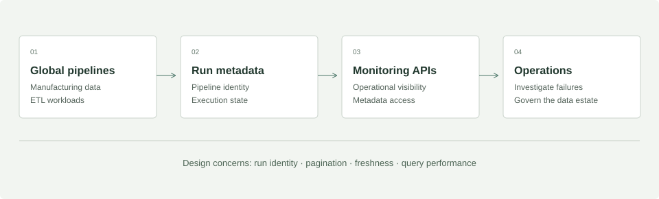

Visibility across 8,000+ pipelines.
Monitoring APIs and centralized metadata governance for a global manufacturing data estate.
 Python
Python Spark
Spark Snowflake
Snowflake- APIs
Architecture diagrams synthesize the experience described in my resume. Illustrative schemas and design considerations explain the engineering approach; they are not internal company artifacts.
The problem
A global manufacturing data estate needs a consistent way to see pipeline activity and discover metadata. Monitoring at this scale calls for a stable interface between execution systems and operational consumers.
My contribution
At Micron, I built APIs to monitor 8,000+ global pipelines and centralize metadata governance. I also developed manufacturing ETL, tuned Spark SQL jobs, and designed AWS infrastructure components.
Architecture

Scaling considerations
- Identity before aggregation
- Use distinct pipeline and run identifiers so retries and repeated executions remain distinguishable. The illustrative model below captures that separation.
- Bound the read path
- For a monitoring API, time filters and pagination keep requests proportional to the question being asked. These are design considerations, not claims about the internal implementation.
- History versus current status
- A current-state view helps operations scan the estate; event history helps engineers investigate. Retention and access patterns should shape how each is stored.
- Scale with evidence
- The documented scale is 8,000+ monitored pipelines. Request throughput, latency targets, storage volumes, and deployment topology are not asserted here.
A model for pipeline observability
Illustrative data model · designed for this portfolio, not an internal schema.
pipeline
PK pipeline_idpipeline_nameowning_team
pipeline_run
PK run_idFK pipeline_idstarted_at · ended_atstatus
run_event
PK event_idFK run_idobserved_atevent_type
One pipeline has many runs; one run has many events. Separating definitions, runs, and events preserves execution history without overwriting a pipeline’s identity.
Outcome
8,000+ global pipelines monitored through APIs.
The work connects backend software engineering with production data operations and metadata governance.
Let’s build what’s next.
Lead data engineering, forward-deployed engineering,
and software engineering for data and AI platforms.